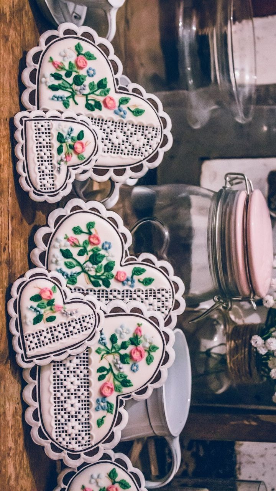

Medovníčky podľa @pernickovani — Normy Jedál
🍃 Většinou se snažím vymýšlet nové vzory, ale některé vzory, jako jsou cibulák či lidový maďarský, jsou stálice.
Máte nějaký svůj oblíbený?
Terka🍃
#pernickovani #pernicky #medovnicky #peceni #food #baking #cookie #gingerbread #foodart #icing #liberec #czech #czechrepublic #rucniprace #depression_help #anxiety #introvertlife #českárepublika #ceskarepublika #remeslo #řemeslo #remeslojecool #pastrylove